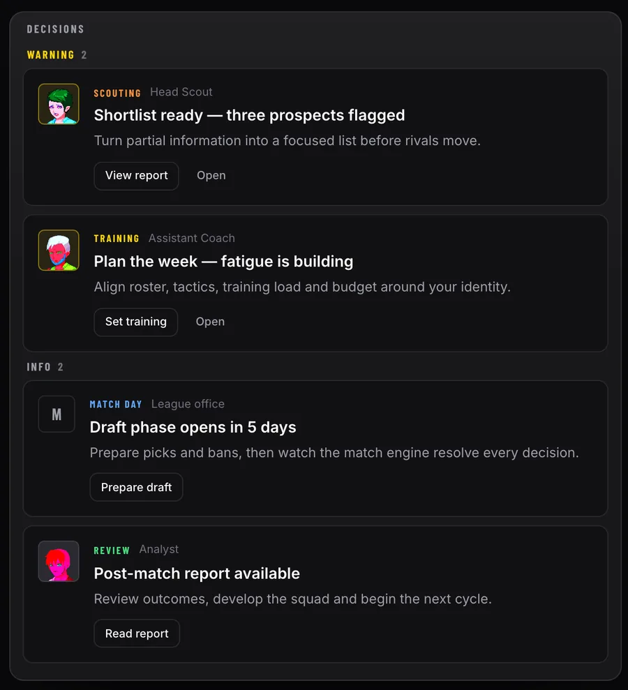
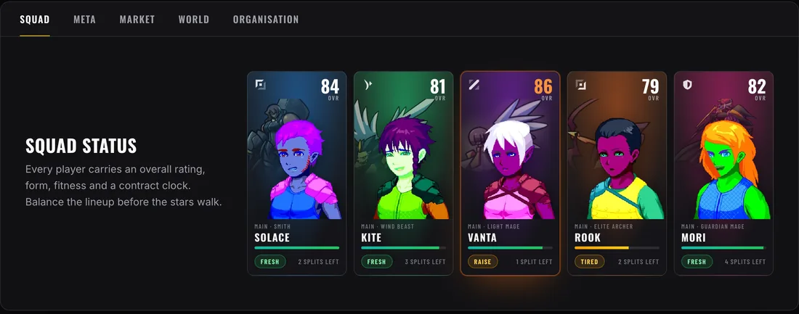
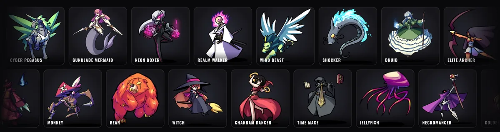

01
2026 · beta v0.5.4, en desarrollo activobeta v0.5.4, in active development · +500 usuarios activos+500 active users
Manager of Legends
manageroflegends.com (nueva pestaña)(new tab)
En producciónIn production
Gestión de equipos de esports.Esports team management.
Ligas, fichajes, draft y partidas simuladas en directo. Todo el juego vive en un motor en Rust compilado a WebAssembly; la interfaz en React solo dibuja lo que el motor decide.Leagues, transfers, drafts and matches simulated live. The whole game lives in a Rust engine compiled to WebAssembly; the React interface only draws what the engine decides.



Capturas reales de manageroflegends.com en producción. Real screenshots from manageroflegends.com in production.